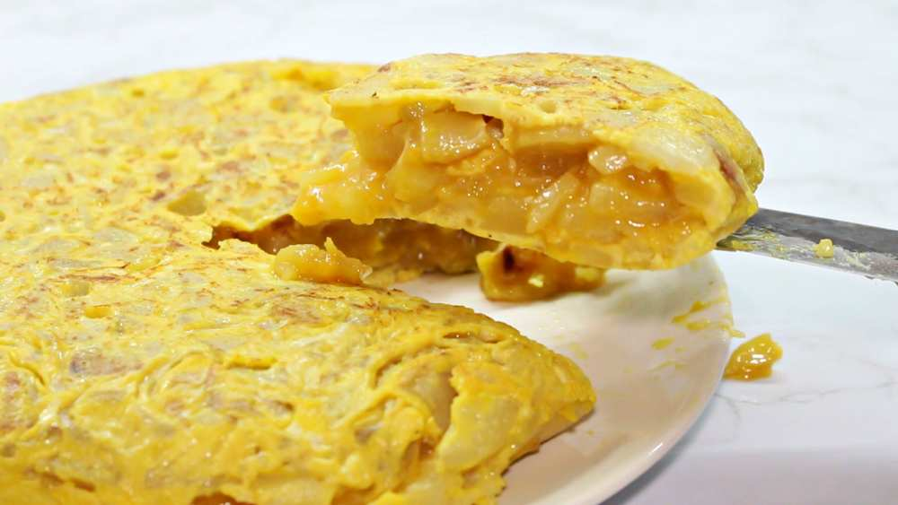

Spanish Omelet

Description
The Spanish omelet, or tortilla española, is one of Spain's most iconic dishes. This thick, hearty omelet made with potatoes and eggs is perfect for any meal of the day. It's crispy on the outside, creamy on the inside, and absolutely delicious served warm or at room temperature.
Ingredients
- 6 large eggs
- 4 large potatoes (about 2 lbs), peeled and thinly sliced
- 1 medium onion, thinly sliced (optional)
- 1 cup olive oil (for frying)
- 1 teaspoon salt
- Freshly ground black pepper to taste
Steps
- Prepare the potatoes: Peel and slice the potatoes into thin rounds (about 1/8 inch thick). If using onion, slice it thinly as well.
- Fry the potatoes: Heat the olive oil in a large non-stick pan over medium heat. Add the potatoes (and onions if using) and cook slowly for 15-20 minutes, stirring gently occasionally. They should be tender but not browned.
- Drain: Use a slotted spoon to remove the potatoes from the oil and place them in a large bowl. Reserve about 2 tablespoons of the oil and discard the rest.
- Beat the eggs: In a separate bowl, beat the eggs with salt and pepper. Add the drained potatoes to the beaten eggs and mix gently. Let it sit for 10 minutes.
- Cook the omelet: Heat 1 tablespoon of the reserved oil in a smaller non-stick pan (about 8-9 inches) over medium-low heat. Pour in the egg and potato mixture, spreading it evenly.
- First side: Cook for 4-5 minutes until the bottom is set and golden. Shake the pan occasionally to prevent sticking.
- Flip: Place a large plate over the pan and quickly flip the omelet onto the plate. Add the remaining oil to the pan and slide the omelet back in, uncooked side down.
- Finish cooking: Cook for another 3-4 minutes. The omelet should be golden on both sides and slightly jiggly in the center.
- Serve: Slide onto a serving plate and let it cool for a few minutes before slicing. Serve warm or at room temperature.
Home